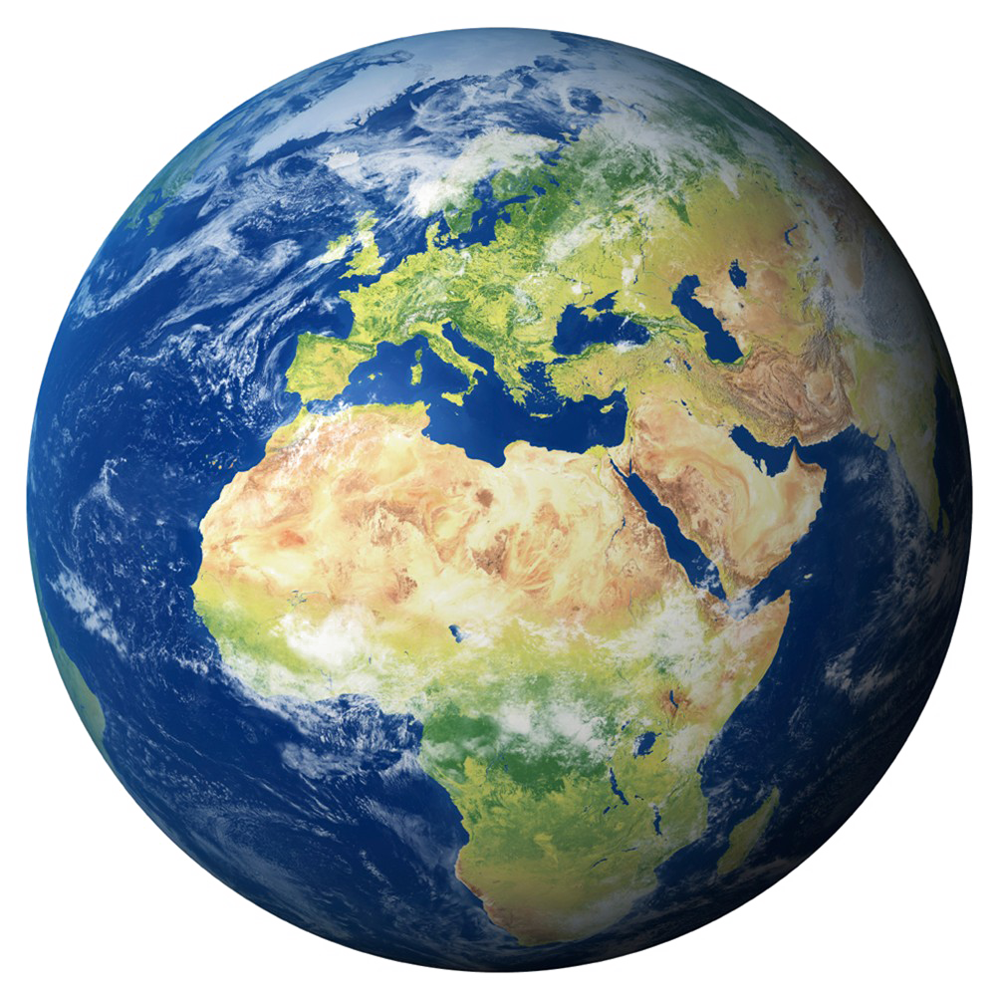

Clima e Terra!
Aqui está as mais novas notícias sobre o clima e a terra!
Em um estudo histórico, cientistas da Organização das Nações Unidas (ONU) mostraram como os humanos aquecerem a atmosfera, o oceano e o solo de forma "inequívoca".
As contínuas emissões de gases do efeito estufa já causaram consequências severas para o planeta e causarão problemas ainda piores caso não sejam reduzidas, de acordo com o relatório divulgado nesta segunda (9/8) pelo IPCC (Painel Intergovernamental sobre o Clima da ONU).